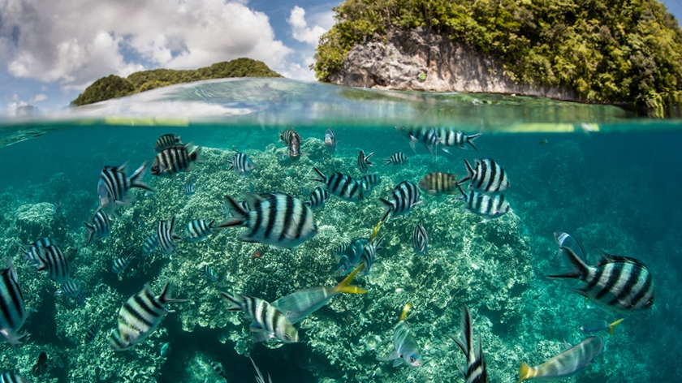
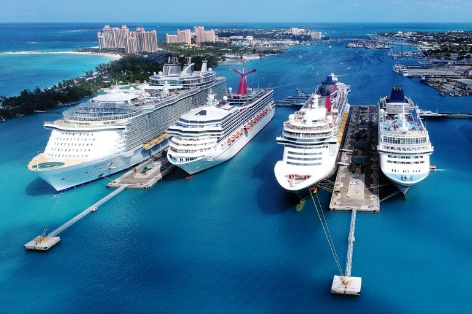
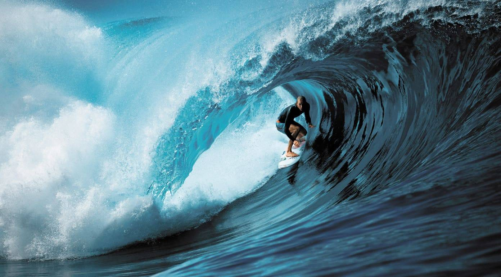

Facts about our ocean

The Largest Ocean
The Pacific Ocean is the largest ocean in the world, covering an area of about 63.8 million square miles (165.2 million square kilometers).

What's in the Ocean
The ocean is home to more than one million known species of plants and animals, with many more still undiscovered
The Air We Breathe
The ocean is responsible for generating about 50% of the oxygen we breathe, thanks to tiny plants called phytoplankton that photosynthesize near the surface.
Absorb Carbon Dioxide
The ocean is also responsible for absorbing about 30% of the carbon dioxide we produce, which helps regulate the Earth's climate.
The Deepest Point of the Ocean
The deepest part of the ocean is the Mariana Trench, which is located in the western Pacific Ocean and reaches a depth of almost 36,070 feet (10,994 meters).

Economy and Transportation
The ocean is vital to global trade, with more than 90% of international trade carried by ships.



{kind=link}
{kind=link}
{kind=link}
{kind=link}